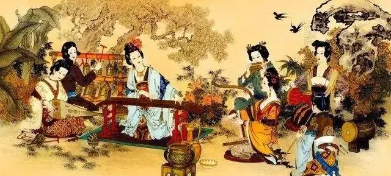
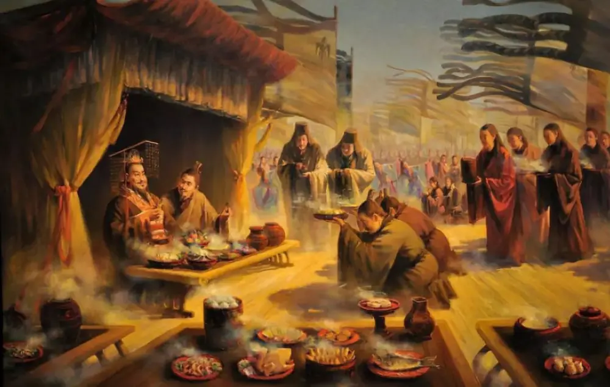
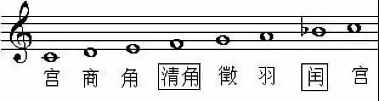
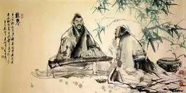

這是舊站 oliverflute.com 的文章，內容保留原貌，只修正排版。其中的考試日期、價錢和課程安排屬寫作當時的資料，請以現行公布為準。
教笛子時，學生常會問我：「老師，中國不是五聲音階嗎？怎麼我看到那麼多 Fa 和 Ti 音？」
沒錯！極具中國民族特色的五聲音階常在樂曲中出現，很多人更是認為，中國民族音樂只有五聲音階。
但事實真的如此嗎？中國民樂真的與十二律無緣嗎？民族音樂究竟又經歷了怎樣的發展歷程，今天張老師帶大家穿越一下！

先簡單介紹一下五聲音階。在我國的音樂理論裡，五聲音階按音高排序依次為宮、商、角、徵、羽，分別對應西方音樂的C、D、E、G、A。我國的五聲音階因沒有半音音程所以也被稱為“不帶半音的五聲音階"。事實上，五聲音階不是我國的特產，它廣泛地流傳于整個亞洲、非洲、蘇格蘭等地。

要探討今天的話題，就有必要聊到我國民族音樂的起源。我國民族音樂的起源基本上可以追溯到早期文明的華夏族的始祖軒轅和黃帝時代。距今8000—9000年的賈湖文化出土的我國迄今發現年代最早的樂器—骨笛，經研究，其已經具備了四聲、五聲、六聲、七聲音階、八聲音階。這哥發現徹底地推翻了中國“七聲音階”西來的說法，更肯定了中國傳統文化的源遠流長。
不過，那時候的民族音樂還沒有形成體系，而且這些音高的擬定也不太可能是遵循的同一套放之四海而皆準的標準，要研究民族音樂正統的起源和發展，還是要到有確切史料記載的年代。

事實上，早在西元前的西周，我國就出現了最早的音樂機構“大司樂"。當時的政府還為這個機構頒佈了完備的禮樂制度，其教學的內容主要是樂德、樂語、樂舞，以及君王祭天祭祖的音樂和後妃在房中唱的房中樂等。周代由於施行了采風和收集民歌的政策，便得以保留下了大量的民間歌謠，並據此形成了中國第一部詩歌總集一一《詩經》。我們熟知的“窈窕淑女，君子好逑”“蒹葭蒼蒼，白露為霜”“執子之手，與子偕老”等詩句其實都是那個時代傳唱的歌謠，只不過在一些歷史的原因之下只流傳下來了歌詞。
這一時期，五聲音階的宮、商、角、徵、羽被正式確立。《管子·地員篇》明確地記載了五聲音階的演算法一一一一“三分損益法"（五度相生律）：“凡將起五音，幾首，先主一而三之，四開以合九九，以是生黃鐘小素之首以成宮。三分而益之以一，為百有八，為徵。不無有三分而去其乘，適足以生商。有三分而複幹其所，以是生羽。有三分去其乘，適足以是成角。”

七聲音階的體系是在五聲音階的基礎上發展而來的。五聲調式以宮開始，以連續的五度相生求得，而在五度迴圈的音圈中，任取五、七、九個相鄰的音，即可形成五、七、九聲音階。中國傳統的七聲音階有三個種類，一是雅樂音階：宮、商、角、變徵、徵、羽、變宮；二是燕樂音階：宮、商、角、清角、徵、羽、閏；三是清樂音階：宮、商、角、清角、徵、羽、變宮。其中，清樂音階與西方音樂的自然大調音階基本吻合。
其實在周代，十二律的理論就已經被明確地確立了，最有力的證據就是震驚中外的曾侯乙編鐘。這套編鐘的音域跨五個半八度，十二個半音齊備。它高超的鑄造技術和良好的音樂性能，改寫了世界音樂史，被中外專家、學者稱為“稀世珍寶”。筆者由於是武漢人，所以之前有幸在省博物館親眼見過這套編鐘，那種穿越時空的厚重感隔著玻璃都能穿透你的脊髓。我們祖先的藝術造詣對於今天的我們來說，真的很難想像。
秦代之後，“罷黜百家，獨尊儒術”使得儒教成了封建社會歷朝皇帝都奉行的圭臬。儒家思想講求的天地人和裡，“和”是非常重要的一環。五聲音階裡，由於沒有四級音和七級音，故而避免了極不和諧的小二度音程，正好與儒家的思想契合。我們現在能聽到的一些民樂古琴曲，絕大多數的風格都是或豪放或婉約的，詭譎怪異風格的少之又少，這一點跟西方音樂有很大的不同。

這個現象，與國人在幾千年的儒家思想的薰陶下養成的民族性格不無關係。民族性格在一定程度上影響了音樂的發展，而和諧的五聲音階的運用正好符合國人的民族性格，所以它成了民族音樂創作的主流。中國本土不可能誕生嘻哈音樂，而崇尚自由的美國卻能，也是這個道理。
因此，十二律從來都不是西方音樂的特產。我國的民族音樂之所以會給人一種刻板的關於五聲音階的印象，不是因為我們只有五聲音階，而是因為我們在歷史的聚變下，選擇了五聲音階。